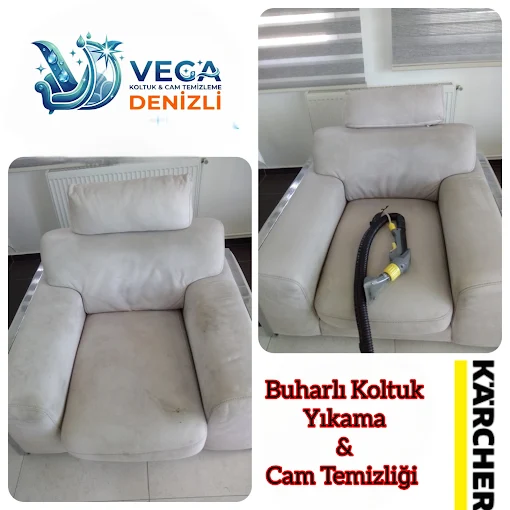
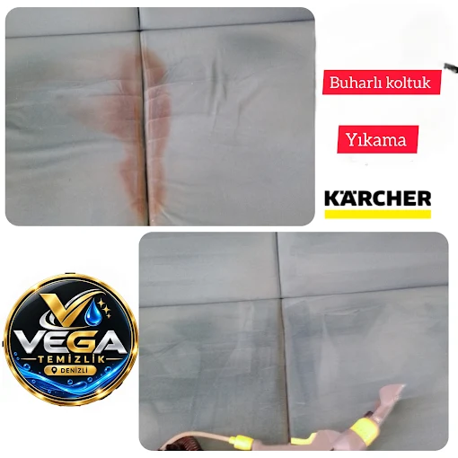
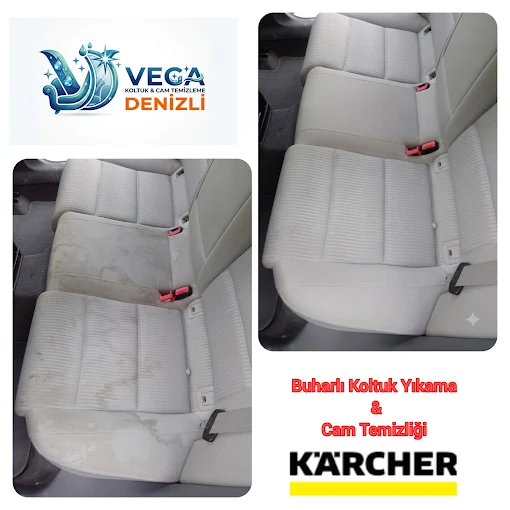
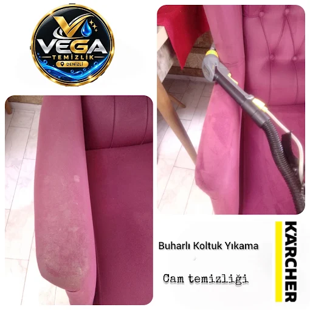
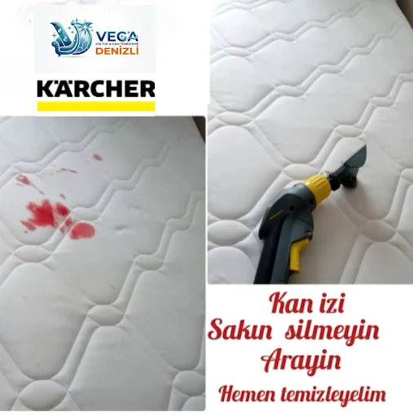
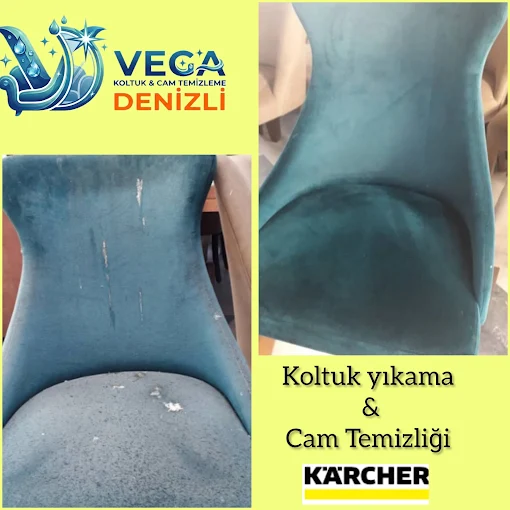

Hizmetlerimiz
Denizli'de koltuk ve yatak yıkama
Evdeki kumaş yüzeyler günlük kullanımda toz, ter, yiyecek ve içecek lekesi biriktirir. Fiyat için arayın ya da WhatsApp'tan yazın.
-
Koltuk yıkama
Denizli'de üçlü, ikili ve tekli koltuk, berjer ve köşe takımı için buharlı koltuk yıkama. Fiyat için arayın ya da WhatsApp'tan yazın.
Fiyat al -
Yatak yıkama
Denizli'de tek ve çift kişilik yatak yıkama. Yatak, uyku sırasında ter ve nem biriktirdiği için düzenli temizlik ister.
Fiyat al -
Cam temizliği
Denizli'de pencere ve cam yüzeylerin temizliği. Fiyat için arayın ya da WhatsApp'tan yazın.
Fiyat al
Önce ve sonra
Yaptığımız işlerden gerçek fotoğraflar.






Fiyat için bize ulaşın
Fiyat bilgisi ve randevu için arayın ya da WhatsApp'tan yazın.
Sık sorulan sorular
Denizli koltuk yıkama fiyatları ne kadar?
0 552 683 86 28 numarasını arayabilir ya da WhatsApp'tan yazabilirsiniz. Size fiyat bilgisi veririz.
Buharlı koltuk yıkama nedir?
Buharlı koltuk yıkama, koltuk kumaşının buharlı yıkama makinesiyle temizlenmesidir. Koltuk, berjer ve yatak gibi kumaş yüzeylerde uygulanır.
Randevuyu nasıl alırım?
0 552 683 86 28 numarasını arayın ya da WhatsApp'tan yazın. Size uygun günü birlikte belirleriz.
Hangi hizmetleri veriyorsunuz?
Koltuk yıkama, yatak yıkama ve cam temizliği hizmeti veriyoruz.
Hangi bölgelere hizmet veriyorsunuz?
Denizli'de hizmet veriyoruz. Mahallenizi mesajla yazarsanız size uygun olup olmadığını söyleriz.
Koltuk ne sıklıkla yıkanmalı?
Yılda iki kez yıkatmanızı öneriyoruz. Evcil hayvan, küçük çocuk ya da yoğun kullanım varsa daha sık gerekebilir.